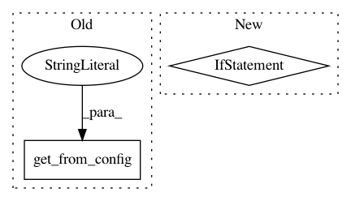

b4cb0c14ebf600daa5573bc90a419eb24329eb55,api/python/quilt3/packages.py,Package,install,#Any#Any#Any#Any#Any#Any#,315
Before Change
"registry configured. Please specify a registry "
"or configure a default remote registry with quilt.config")
elif registry == "local":
registry = get_from_config("default_local_registry")
if dest_registry is None:
dest_registry = get_from_config("default_local_registry")
After Change
f"registry, use "push" or "build" instead."
)
if dest is None:
dest = get_install_location().rstrip("/") + "/" + quote(name)
else:
dest_parsed = urlparse(fix_url(dest))
if dest_parsed.scheme != "file":
raise QuiltException(
f"Invalid package destination path {dest!r}. "dest", if set, must point at "
f"the local filesystem. To copy a package to a remote registry use "push" or "
f""build" instead."
)
pkg = cls.browse(name=name, registry=registry, top_hash=top_hash)
dest = fix_url(dest)
message = pkg._meta.get("message", None) // propagate the package message
In pattern: SUPERPATTERN
Frequency: 3
Non-data size: 2
Instances
Project Name: quiltdata/quilt
Commit Name: b4cb0c14ebf600daa5573bc90a419eb24329eb55
Time: 2019-06-05
Author: aleksey@residentmar.io
File Name: api/python/quilt3/packages.py
Class Name: Package
Method Name: install
Project Name: analysiscenter/batchflow
Commit Name: 02098c5c44893ce455aefcfc452aa00bd655987b
Time: 2017-11-15
Author: rhudor@gmail.com
File Name: dataset/models/tf/vgg.py
Class Name: VGG
Method Name: _build_config
Project Name: analysiscenter/batchflow
Commit Name: e33754c3cc5dd3c731120e38cc09aaafbcfc35fe
Time: 2017-11-17
Author: rhudor@gmail.com
File Name: dataset/models/base.py
Class Name: BaseModel
Method Name: __init__